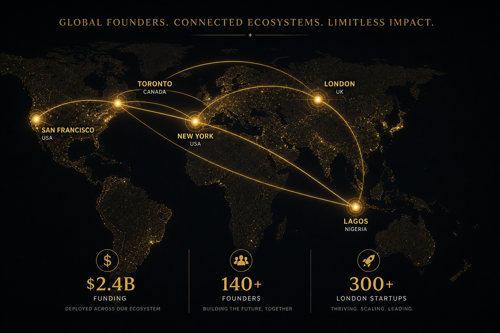

There is a map of global venture capital that most Western investors still carry in their heads. Silicon Valley at the centre. London and Berlin as secondary nodes. Maybe Tel Aviv for deep tech. Africa, when it appears at all, is a single undifferentiated blob labelled "frontier market."
That map is obsolete. And the people making it obsolete are, disproportionately, Nigerian.
The Diaspora Effect in Numbers
Nigeria's tech diaspora — the engineers, founders, operators, and investors who have moved between Lagos, London, New York, Toronto, and San Francisco — now represents one of the most influential informal networks in global venture capital.
The numbers are striking:
$2.4 billion in venture funding flowed into Nigerian-founded startups in 2025, according to Partech Africa. That figure includes companies headquartered outside Nigeria but founded by Nigerians — a critical distinction that most Africa-focused reports miss.
37 per cent of all Africa-focused VC deals in 2025 involved at least one founder with diaspora connections, per the African Private Equity and Venture Capital Association (AVCA).
140+ Nigerian-diaspora founders have raised Series A or above in the past three years, spanning fintech, logistics, healthtech, and enterprise software.
London has emerged as the primary diaspora hub for Nigerian tech founders, with an estimated 300+ Nigerian-founded startups operating from the city — more than any other diaspora destination.
These are not small numbers. They represent a structural shift in how capital, talent, and ideas flow between Africa and the rest of the world.

Why London Became the Bridge
London's rise as the Nigerian tech diaspora capital is not accidental. Three factors converge:
- Regulatory familiarity. Nigeria's legal system is built on English common law. For founders navigating FCA regulations, Companies House filings, and UK GDPR compliance, the learning curve is gentler than in any other major tech hub. This matters enormously for fintech founders — and fintech dominates Nigerian tech.
- Time zone arbitrage. London sits between Lagos (same time zone for half the year) and New York (five hours ahead). For founders building products that serve African consumers but raising capital from US investors, London is the optimal geographic middle ground.
- The Commonwealth pipeline. The UK's Tier 1 Exceptional Talent visa (now the Global Talent visa), combined with university alumni networks from UCL, Imperial, and LSE, creates a well-worn pathway. Nearly 60 per cent of Nigerian-diaspora founders in London arrived initially as students.
But London is not just a landing pad. It is increasingly where the deals get done. British Patient Capital, Seedcamp, and LocalGlobe have all significantly increased their Africa-adjacent deal flow since 2023, largely through relationships with diaspora founders already in their networks.
The Founders Rewriting the Map
The diaspora effect is best understood through specific stories:
Moniepoint — now processing over $20 billion in annual payment volume — was co-founded by Tosin Eniolorunda, who built early technical infrastructure between Lagos and London before scaling the business into Africa's largest business payments platform.
LemFi (formerly LemoFi), the cross-border payments platform, was founded in London by Ridwan Olalere and operates a Lagos-London-Toronto triangle that perfectly illustrates the diaspora model: regulatory home in the UK, engineering talent in Lagos, growth market across the African diaspora in North America.
Piggyvest, Africa's largest savings and investment platform with over 4 million users, draws on diaspora networks for capital, talent recruitment, and product design insights gleaned from Western fintech innovations.
These companies did not succeed despite being diaspora-led. They succeeded because of it. The ability to navigate multiple regulatory environments, access diverse capital pools, and recruit across geographies is a structural competitive advantage.
The VC Blind Spot
Western VCs are slowly waking up to the diaspora opportunity, but most remain behind the curve. The core problem is categorisation. Most VC firms organise their deal flow by geography: "US deals," "Europe deals," "Africa deals." Diaspora-led companies confound this framework.
Is LemFi a UK fintech? An African remittance company? A Canadian growth story? It is all three simultaneously, and that multi-geography nature is precisely what makes it valuable. But it also means the company falls through the cracks of geographically siloed investment teams.
Smart capital is adapting. Firms like The Pitch Journey ecosystem and events like the Semaform Foundation summits are designed to bridge this gap — creating spaces where diaspora founders can engage with global investors who understand the cross-border model.
The firms that build dedicated diaspora investment theses — not "Africa funds" or "UK funds" but strategies that follow the talent wherever it operates — will capture disproportionate returns over the next decade.
What This Means for Global VC
The Nigerian tech diaspora is the most visible example of a broader pattern. Indian founders have reshaped Silicon Valley for decades. Chinese returnees built Shenzhen's hardware ecosystem. Israeli founders made the "Startup Nation" through constant movement between Tel Aviv and the Bay Area.
Nigeria's diaspora is doing the same thing, but with a critical difference: it is happening in real time, in a market that most global investors still underestimate. The runway for alpha is enormous.
For Upside Journal, this beat — The Other Markets — exists precisely because the most important stories in global venture capital are not happening in the places most publications cover. Lagos to London is not a niche story. It is the future of how global capital allocation works.
YouTube Embed: Why Africa is the Next Investment Frontier — Data-driven analysis of Africa's venture capital growth trajectory.
About the Author
Olusegun (Olu) Olufunmiloye — Olu is the Publisher of Upside Journal, founder of CNE Concepts Ltd, CNE Studios and Cocoa Soft Africa. He writes thought pieces with focus on using AI in 2026 for business.